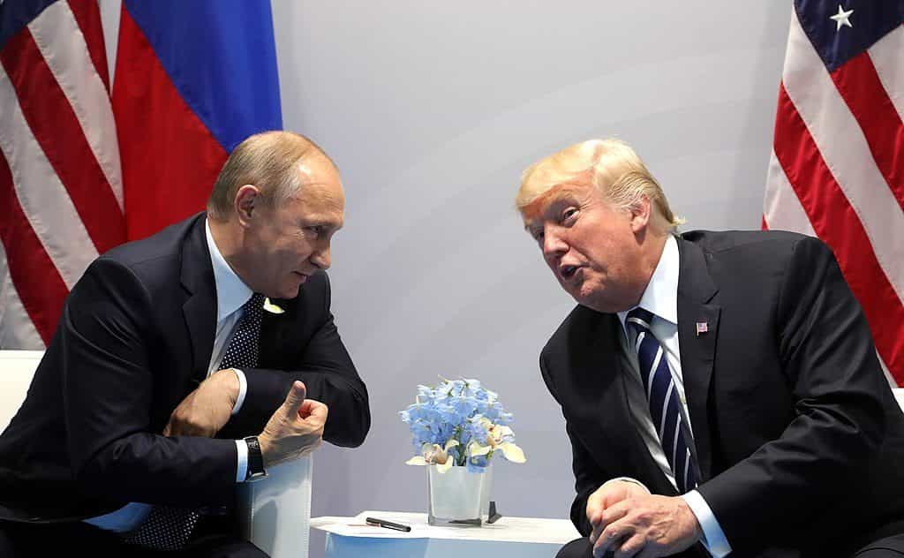

The United States is experiencing a third Red Scare. Russia is being accused of undermining US elections, running armies of “Russian bots” to influence discussion on social media, and bribery or undue influence over American officials, including President Trump. Vladimir Putin is no angel, but it’s obvious that most of these claims are overblown, if not outright fabrications. This Red Scare is being perpetrated to discredit Donald Trump and force him into a corner on foreign policy.
Why do the globalist elites hate Russia so much? This article examines three recent events where Vladimir Putin challenged the globalists, which has led them to launch this new Red Scare: Russia challenging the US dollar, the conflict in Ukraine, and the conflict in Syria.
BRICS nations challenge the dollar
The borrowing power of the dollar is artificially inflated because of its use as the world reserve currency. Internationally, most transactions are conducted in US dollars, which means that nations are forced to sell goods to the US in exchange for fiat paper if they want to purchase goods in international trade.
In 2012, the nations of Brazil, Russia, India, China, and South Africa began to seriously discuss forming their own bank to finance infrastructure and development projects. In 2014, they signed an agreement to create the New Development Bank, which has begun to finance projects in the BRICS nations.
This bank threatens the Federal Reserve system by offering an alternative source of credit. The BRICS bank is creating development loans using fractional reserve lending, which increases the money supply without the consent of the bankers at the Fed. Nobel Prize winning economist Joseph Stiglitz explained:
This is adding to the flow of money that will go to finance infrastructure, adaptation to climate change — all the needs that are so evident in the poorest countries. It reflects a fundamental change in global economic and political power. [Emphasis mine]
Challenging the status of the dollar by creating an alternate source of credit is a direct threat to the globalist financial elite, which is why they began to ratchet up pressure against Putin around this time.
The Conflict in Ukraine
In November of 2013, supposedly spontaneous protests began in Ukraine against the elected government of President Viktor Yanukovych. The reality is that the protests were sponsored by the US State Department, in concert with George Soros’ National Endowment for Democracy, with the aim to punish Russia for supporting the BRICS development bank by overthrowing a government that was friendly to Moscow.
The Obama Administration, and London, not only welcomed the violent coup in Ukraine in 2014, as a means to justify a new NATO military mobilization against Russia, but rather, they created it.
The National Endowment for Democracy spent $3.3 billion in Ukraine in 2012, a simply astronomical sum for their stated goal of supporting democratic NGOs, but perfectly reasonable if Soros was developing an underground network for a color revolution. The NED has a long history of accepting money directly from the United States to work on behalf of the State Department to plot subversive activities. The State Department was directly implicated in the plot, when Victoria Neuland was caught discussing which leaders she wanted to be placed into power.
If that weren’t bad enough, the United States ended up backing real neo Nazis to take over Ukraine in the power vacuum they had created:
The 2014 coup in Ukraine was perpetrated by figures and groups of the so-called opposition, whose lineage and practices trace directly to Nazi formations going back decades…
In response to the threat of a Nazi state in his backyard, Putin elected in intervene in Ukraine, sending troops that fought and won a relatively small conflict against the revolutionary faction. After this, a referendum was held, and Crimea voted overwhelmingly voted to join Russia.
Conflict in Syria
The globalist elites have wanted to overthrow the government of Syria for many years. In 2006, General Wesley Clark stated that, after 9/11, the neocons came up with a plan to invade 7 nations in 5 years: Iraq, Syria, Iran, Lebanon, Libya, Somalia and Sudan.
The recent escalation of conflict stems from the discovery of the world’s largest deposit of natural gas in waters owned by Iran, and the fight over the direction of the pipeline to bring the gas to market. Syria was planning to build a pipeline with Iraq and Iran, while the US wanted to build their own pipeline.
The US began to support the Syrian rebels, even though they knew the rebel forces included large numbers of Islamic extremists. Predictably, the extremists began slaughtering everyone, destroying ancient cultural sites and eating people’s hearts.
Wanting to protect his advantage on selling natural gas to the EU, and wanting to put down the ISIS savages, Putin intervened in Syria. Before the intervention, Assad was barely holding onto his major power centers, but as soon as Russia intervened, ISIS began to crumble quickly in the face of an elite military superpower.
This intervention in Syria was the last straw for the globalist elites, who are now throwing everything they have at discrediting and undermining Vladimir Putin.
Enter Donald Trump

This image triggers globalists
Donald Trump is not a globalist, cuckservative, or neocon. He is a traditional American economic nationalist, like Hamilton, Clay, Lincoln, or JFK. Trump knows that there is more money to be made in peaceful cooperation than antagonism, so he prefers neutrality against the Russians.
This has forced the globalists to try every lie they can imagine to try to either discredit Trump and remove him from office through impeachment, or else twist public opinion to limit Trump to a foreign policy of aggression against Russia.
Conclusion
The new Red Scare is all about geopolitics. As Vladimir Putin has continued to thwart globalist schemes, they have continued to ratchet up their hysterical propaganda about Russian influence. This is a ruse designed to discredit President Trump and paint him into a corner with his foreign policy toward Russia.
Read Next: Russia Is Not As Good For Men As You Think